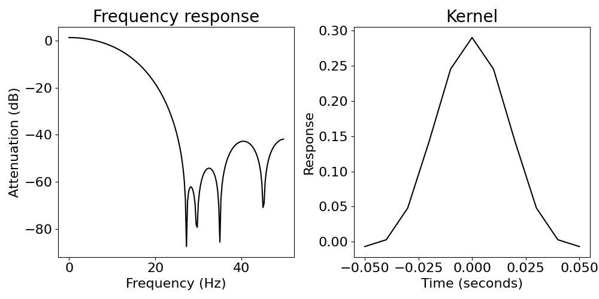
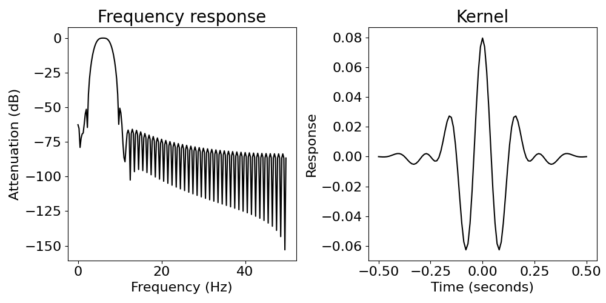

Note
Click here to download the full example code
Filtering¶
Apply digital filters to neural signals, including highpass, lowpass, bandpass & bandstop filters.
This tutorial primarily covers the neurodsp.filt module.
Filtering with NeuroDSP¶
The filter_signal() function is the main function for filtering using NeuroDSP.
Sections¶
This tutorial contains the following sections:
Bandpass filter: extract a single oscillation from a signal
Highpass, lowpass, and bandstop filters: remove power in unwanted frequency ranges
Time-frequency resolution trade off: changing the filter length
Infinite-impulse-response (IIR) filter option
Beta bandpass filter on a neural signal
# Import filter function
from neurodsp.filt import filter_signal
# Import simulation code for creating test data
from neurodsp.sim import sim_combined
from neurodsp.utils import set_random_seed, create_times
# Import utilities for loading and plotting data
from neurodsp.utils.download import load_ndsp_data
from neurodsp.plts.time_series import plot_time_series
# Set the random seed, for consistency simulating data
set_random_seed(0)
# General setting for simulations
fs = 1000
n_seconds = 5
# Generate a times vector, for plotting
times = create_times(n_seconds, fs)
1. Bandpass filter¶
Extract signal within a specific frequency range (e.g. theta, 4-8 Hz).
# Set the frequency in our simulated signal
freq = 6
# Set up simulation for a signal with an oscillation + noise
components = {'sim_powerlaw' : {'exponent' : 0},
'sim_oscillation' : {'freq' : 6}}
variances = [0.1, 1]
# Simulate our signal
sig = sim_combined(n_seconds, fs, components, variances)
# Define a frequency range to filter the data
f_range = (4, 8)
# Bandpass filter the data, across the band of interest
sig_filt = filter_signal(sig, fs, 'bandpass', f_range)
# Plot filtered signal
plot_time_series(times, [sig, sig_filt], ['Raw', 'Filtered'])
Notice that the edges of the filtered signal are clipped (no red).
Edge artifact removal is done by default in NeuroDSP filtering, because the signal samples at the edges only experienced part of the filter.
To bypass this feature, set remove_edges=False, but at your own risk!
2. Highpass, lowpass, and bandstop filters¶
2a. Highpass filter¶
Remove low frequency drift from the data.
# Settings for the rhythmic components in the data
freq1 = 3
freq2 = 0.5
# Set up simulation for a signal with an oscillation + noise + low frequency activity
components = {'sim_powerlaw' : {'exponent' : 0},
'sim_oscillation' : [{'freq' : freq1}, {'freq' : freq2}]}
variances = [0.1, 1, 1]
# Generate a signal including low-frequency activity
sig = sim_combined(n_seconds, fs, components, variances)
# Filter the data
f_range = (2, None)
sig_filt = filter_signal(sig, fs, 'highpass', f_range)
# Plot filtered signal
plot_time_series(times, [sig, sig_filt], ['Raw', 'Filtered'])
2b. Lowpass filter¶
Remove high frequency activity from the data.
# Filter the data
f_range = (None, 20)
sig_filt = filter_signal(sig, fs, 'lowpass', f_range)
# Plot filtered signal
plot_time_series(times, [sig, sig_filt], ['Raw', 'Filtered'])
2c. Bandstop filter¶
Next let’s try a bandstop filter, for the example use case of removing 60Hz noise from data.
Notice that it is necessary to set a non-default filter length because a filter of length 3 cycles of a 58Hz oscillation would not attenuate the 60Hz oscillation much (try this yourself!).
# Generate a signal, with a low frequency oscillation and 60 Hz line noise
components = {'sim_oscillation' : [{'freq' : 6}, {'freq' : 60}]}
variances = [1, 0.2]
sig = sim_combined(n_seconds, fs, components, variances)
# Filter the data
f_range = (58, 62)
sig_filt = filter_signal(sig, fs, 'bandstop', f_range, n_seconds=0.5)
Out:
/home/rph/Projects/neurodsp/neurodsp/filt/checks.py:153: UserWarning: The filter attenuation never goes below -20 dB.Increase filter length.
warn('The filter attenuation never goes below {} dB.'\
# Plot filtered signal
plot_time_series(times, [sig, sig_filt], ['Raw', 'Filtered'])
You might sometimes see a user warning that warns about the level of attenuation.
You will see this warning whenever the filter you construct has a frequency response that does not hit a certain level of attenuation in the stopband. By default, the warning appears if the level of attenuation does not go below 20dB.
You can check filter properties by plotting the frequency response when you apply a filter.
# Apply a short filter
# In this case, we won't achieve our desired attenuation
sig_filt = filter_signal(sig, fs, 'bandstop', f_range,
n_seconds=0.25, plot_properties=True)
Out:
/home/rph/Projects/neurodsp/neurodsp/filt/checks.py:153: UserWarning: The filter attenuation never goes below -20 dB.Increase filter length.
warn('The filter attenuation never goes below {} dB.'\
# This user warning disappears if we elongate the filter
sig_filt = filter_signal(sig, fs, 'bandstop', f_range,
n_seconds=1, plot_properties=True)
3. Time-frequency resolution trade off¶
With longer filter kernels, we get improved frequency resolution, but worse time resolution.
Two bandpass filters (one long and one short)¶
Notice that the short filter preserves the start of the oscillation better than the long filter (i.e. better time resolution).
Notice that the long filter correctly removed the 1Hz oscillation, but the short filter did not (i.e. better frequency resolution).
# Reset simulation settings for this example
fs = 100
n_seconds = 3
times = create_times(n_seconds, fs)
# Generate a signal with an oscillation, noise, and a low frequency oscillation
components = {'sim_powerlaw' : {'exponent' : 0},
'sim_oscillation' : [{'freq' : 6}, {'freq' : 1}]}
variances = [0.1, 1, 1]
sig = sim_combined(n_seconds, fs, components, variances)
# Set the first second to 0
sig[:fs] = 0
# Define the frequency band of interest
f_range = (4, 8)
# Filter the data
sig_filt_short = filter_signal(sig, fs, 'bandpass', f_range, n_seconds=.1)
sig_filt_long = filter_signal(sig, fs, 'bandpass', f_range, n_seconds=1)
Out:
/home/rph/Projects/neurodsp/neurodsp/filt/checks.py:162: UserWarning: The low or high frequency stopband never gets attenuated bymore than 20 dB. Increase filter length.
warn('The low or high frequency stopband never gets attenuated by'\
/home/rph/Projects/neurodsp/neurodsp/filt/checks.py:172: UserWarning: Transition bandwidth is 10.0 Hz. This is greater than the desiredpass/stop bandwidth of 4.0 Hz
warn('Transition bandwidth is {:.1f} Hz. This is greater than the desired'\
# Plot filtered signal
plot_time_series(times, [sig, sig_filt_short, sig_filt_long],
['Raw', 'Short Filter', 'Long Filter'])
# Visualize the kernels and frequency responses
print('Short filter')
sig_filt_short = filter_signal(sig, fs, 'bandpass', f_range, n_seconds=.1,
plot_properties=True)
print('\n\nLong filter')
sig_filt_long = filter_signal(sig, fs, 'bandpass', f_range, n_seconds=1,
plot_properties=True)
- 
- 
Out:
Short filter
/home/rph/Projects/neurodsp/neurodsp/filt/checks.py:162: UserWarning: The low or high frequency stopband never gets attenuated bymore than 20 dB. Increase filter length.
warn('The low or high frequency stopband never gets attenuated by'\
/home/rph/Projects/neurodsp/neurodsp/filt/checks.py:172: UserWarning: Transition bandwidth is 10.0 Hz. This is greater than the desiredpass/stop bandwidth of 4.0 Hz
warn('Transition bandwidth is {:.1f} Hz. This is greater than the desired'\
Long filter
4. Infinite impulse response (IIR) filter option¶
So far, the filters that we’ve been using are finite impulse response (FIR) filters.
These filters are nice because we have good control over their properties, by manipulating the time-frequency resolution trade off through the filter length.
However, sometimes we may not be as concerned with the precise filter properties, and so there is a faster option: IIR filters.
We often use these filters when removing 60 Hz line noise.
Here we apply a 3rd order Butterworth filter to remove 60Hz noise.
Notice that some edge artifacts remain.
# Reset simulation settings
n_seconds = 1
fs = 1000
times = create_times(n_seconds, fs)
# Generate a signal, with a low frequency oscillation and 60 Hz line noise
components = {'sim_oscillation' : [{'freq' : 6}, {'freq' : 60}]}
variances = [1, 0.2]
sig = sim_combined(n_seconds, fs, components, variances)
# Filter the data
f_range = (58, 62)
sig_filt = filter_signal(sig, fs, 'bandstop', f_range,
filter_type='iir', butterworth_order=3)
Out:
/home/rph/Projects/neurodsp/neurodsp/filt/filter.py:96: UserWarning: Edge artifacts are not removed when using an IIR filter.
warn('Edge artifacts are not removed when using an IIR filter.')
# Plot filtered signal
plot_time_series(times, [sig, sig_filt], ['Raw', 'Filtered'])
5. Beta bandpass filter on neural signal¶
# Download, if needed, and load example data file
sig = load_ndsp_data('sample_data_1.npy', folder='data')
# Set sampling rate, and create a times vector for plotting
fs = 1000
times = create_times(len(sig)/fs, fs)
# Filter the data
f_range = (13, 30)
sig_filt, kernel = filter_signal(sig, fs, 'bandpass', f_range, n_cycles=3,
plot_properties=True, return_filter=True)
# Plot filtered signal
plot_time_series(times, [sig, sig_filt], ['Raw', 'Filtered'], xlim=[2, 5])
Notice that in the filtered time series, the resulting oscillation appears to be more sinusoidal than the original signal really is.
If you are interested in this problem, and how to deal with it, you should check out bycycle, which is a tool for time-domain analyses of waveform shape.
Total running time of the script: ( 0 minutes 1.275 seconds)